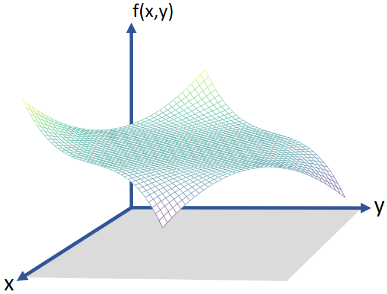
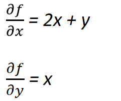
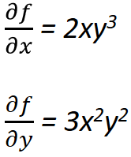
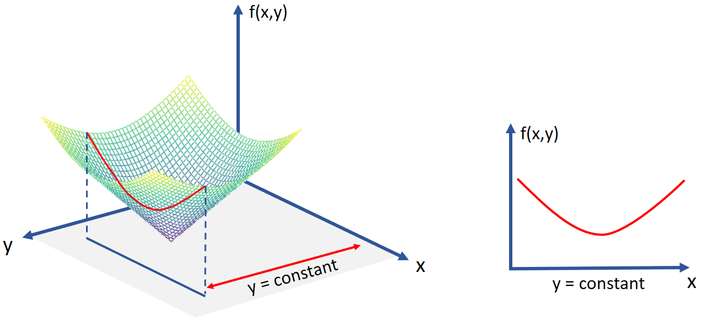
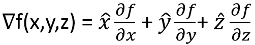
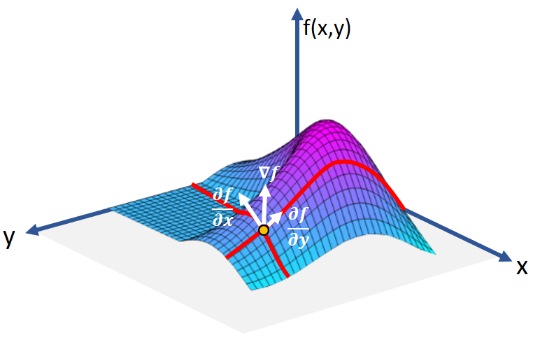
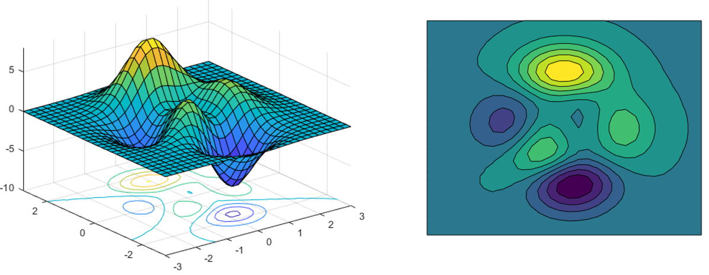

HOME BLOG EBOOKS ABOUT CONTACT SHOP
Now we'll turn our attention to multi variable functions i.e. functions that dependent on more than one variable. For example, f(x,y,z) = xy + x2z +y2z3, this function f depends on variables x, y and z.
A single variable function can be represented on a 2-dimensional plot, similarly a two variable function can be represented on 3-dimensional plots.

Visualizing higher variable functions is not easy and not really necessary also. For explaining concepts, we'll stick with 2 variable functions. Check this video out:Visualizing High-Dimensional Space
The partial derivative of a multi variable function is its derivative with respect to any one of its variables, with the others held constant. Partial derivative is denoted by the symbol ∂. Calculating the partial derivative is straight forward, you just to need to consider variables other than one you are differentiating with as constants and carry out normal differentiation.
Example 1: f(x,y) = x2 + xy

Example 2: f(x,y) = x2y3

By considering the other variables as constant, we are essentially reducing the multi variable function to a single variable function. And therefore the partial derivative gives the rate of change of the function with respect to any one variable.

For a multi variable function, the function has multiple derivatives at every point, one with respect to every variable. For example, a function f(x, y) has 2 derivatives ∂f/∂x and ∂f/∂y at every point. Each of these derivatives correspond to the rate of change of the function with respect to a particular variable. The resultant of these derivatives gives the maximum change of the function when all the variables are considered all at one. That is the gradient.
In other words, the Gradient of a multi variable function is a vector that points in the direction of greatest increase (steepest slope) of the function at a point. It is denoted by symbol ∇f.


The gradient is analogous to the slope for single variable functions.
A contour plot is a graphical technique for representing a 3-dimensional plots on 2-dimensional surfaces. Being able to identify contour plots could come in handy later on.
In a contour plot, the third dimension is represented in the form of closed loops or contours. Points on the same contour are at same altitude and the points at the center of contours are either peaks (maximums) or troughs (minimums). Different colors are used to denote different altitudes, otherwise the altitudes are directly mentioned on the contours.

Here is a 3d plot and its corresponding contour plot.
To study calculus in detail, refer: MIT_OCW_Strang_Calculus.pdf